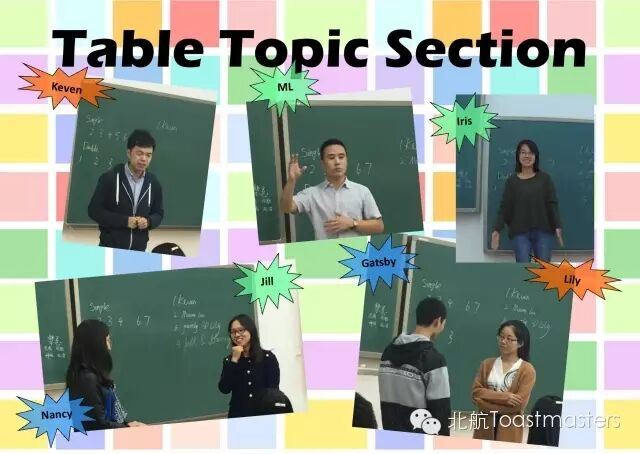

← 返回存档目录
在一个秋风萧瑟的周五晚上，华北平原上有两群头马正朝着他们共同约定的地点前行。他们共同的祖先来自北美大草原，说的是英语，但他们已经在亚洲的华北平原上定居了很久，这次他们要一起说中文。
情绪管理
~Keven 大帝自己都说自己脾气好，据小编所知，他也懂星座，不知道大帝有木有一个长时间的爱好呢？（听<德公公>说脾气好、懂星座、没有长时间爱好的男生很花心，呵呵）~Mauna Loa 火山在遇到自己不喜欢但又必须要做的事情的时候,第一想到的是用哲学用老子的思想，听他这么说之后，我的心里是豁然的“哦~怪不得木有女朋友”~Gastby&Lily 和自己相处八年的女朋友在最后要结婚的时候分了，然后找到跟自己同命相连的女闺蜜求安慰，我只想说：在一起。最后Gastby&Lily因为那颗小小的心走到了Best Table Topic Speaker的领奖台上。~Jill&Nancy 两个女人要在头马的舞台上上演甄嬛传。一开始两个人按照情节走向开撕了一会，可后来怎么突然到基情四射的画面呢，原谅小编脑容量有限，一时缓不过来，我想静静。~Iris 说到自己做的最需要勇气的事情，Iris说是登上头马的演讲台。其实小编跟Iris一样的想法，小编一开始也是很害羞很紧张的哟，所以说头马不只是一个说英语或者中文的地方，无关语言，这儿也是你挑战自我、发现自我的地方。我就是我，颜色不一样的鬼火。小编期待已久的中文meeting 终于如期而至了。题目定的是极好的，本来真的就准备给大家来几段鬼故事的，奈何找不到合适的，也怕把大家吓到了，所以就讲了讲自己的不幸经历，让大家乐呵乐呵。希望大家以后遇事不要杯弓蛇影，有时候真正吓到我们的是想象。谢谢Rachel的点评，以后记得叫我才华横溢又幽默的美女哦，23333Summers 对英语真是天地可鉴的真爱呀，在难得一次的中文meeting上竟然讲他有多么地爱英语。难怪他在小学和高中的时候都因为自己甩别人几条街的英语水平而成为“小学之王”和“高中之王”<破涕而笑>（强烈建议这个软件装表情包，我要放表情），当他说到日本英语外教说的“Fighting! Fighting! Fighting!”已经笑到不行了<滚地大笑>（看来表情包还是远远不够的，要body action包才行呀），Summers的body language真真儿是极好的。来自Athena 女神俱乐部的女神1-Berrina给我们讲了一个男神-瑞德·巴特勒的故事。其实小编并没有看《乱世佳人》这部小说，电影也是hin久hin久之前看的了，然而通过Berrina的讲述，一个痞痞的、能把傲娇的女主hold住的巴特勒又呈现在我脑海里，最后巴特勒一句“我累了”却也是最真实的人性的写照。向经典致敬，向人性致敬。女神2-Blair 衣锦还校，带给师弟师妹们（虽然我并不是）一股挡都挡不住的正能量呀。当我们还在小学为一道“你的理想是什么”的作文题抓耳挠腮的时候，Blair也跟我们一样，最后我们大多数人也跟他一样写上的别人的梦想，Blair写的是科学家，貌似我写的是航天员<hahaha>，在Blair寻找人生目标的路上，她貌似找到了什么不得了的东西，我们需要一个GPS,用它来找准我们的目标，也要定期根据大环境的变化更新我们的地图，这样的觉悟你get到了么？特别感谢来自Athena女神俱乐部的两位男神来担任本次meeting的大肉，6666666下周英语，Good bye Chinese, I love you!